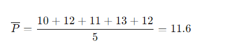
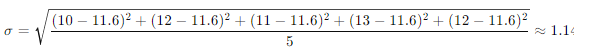

Método de Análise: Média Móvel + Desvio Padrão
O método de análise que utilizamos combina a média móvel e o desvio padrão. Aqui está o funcionamento:
1. Coleta de Dados
Capturamos os dados dos últimos 30 dias de 200 ações. Para cada ação, registramos o valor de fechamento diário.
2. Cálculo da Média Móvel
Calculamos a média móvel dos valores de fechamento. A fórmula para a média móvel P é:
Onde:
- Pi é o valor de fechamento de uma ação no dia i.
- n é o número de dias (n = 30).
Por exemplo, se os valores de fechamento de uma ação nos últimos 5 dias foram: 10, 12, 11, 13, 12, a média móvel será:
3. Cálculo do Desvio Padrão
Comparamos a média móvel com o valor de abertura de cada uma das 200 ações. Calculamos o desvio padrão σ para medir a volatilidade. A fórmula para o desvio padrão é:
Onde:
- Pi é o valor de fechamento de uma ação no dia i.
- P é a média móvel calculada.
- n é o número de dias (n = 30).
Por exemplo, se os valores de fechamento de uma ação nos últimos 5 dias foram: 10, 12, 11, 13, 12, a média móvel é 11.6 e o desvio padrão será:
4. Seleção das Ações
Selecionamos as 5 ações com o maior desvio padrão em relação à média móvel para a carteira de ações. Isso significa que estamos escolhendo as ações com maior volatilidade, que têm maior potencial de ganho (ou perda).
5. Atualização Diária
O algoritmo faz essa análise todos os dias. As ações presentes hoje na carteira podem permanecer ou ser substituídas por outras com um desvio padrão maior em relação à média móvel. Isso garante que a carteira está sempre composta pelas ações mais voláteis, potencialmente mais lucrativas.
Exemplo Prático
1. Coleta de Dados:
- Ação A: [10, 12, 11, 13, 12, ...]
- Ação B: [20, 22, 21, 23, 22, ...]
2. Cálculo da Média Móvel:
- Ação A: Pa = 11.6
- Ação B: Pb = 21.6
3. Cálculo do Desvio Padrão:
- Ação A: σ A ≈ 1.14
- Ação B: σ B ≈ 1.14
4. Seleção das Ações:
- Ações com maior desvio padrão entram na carteira.
5. Atualização Diária:
- Reavaliação das ações com novos dados diários.
Este método permite uma gestão dinâmica e eficiente da carteira de ações, sempre ajustando para maximizar o potencial de ganho com base na volatilidade das ações.